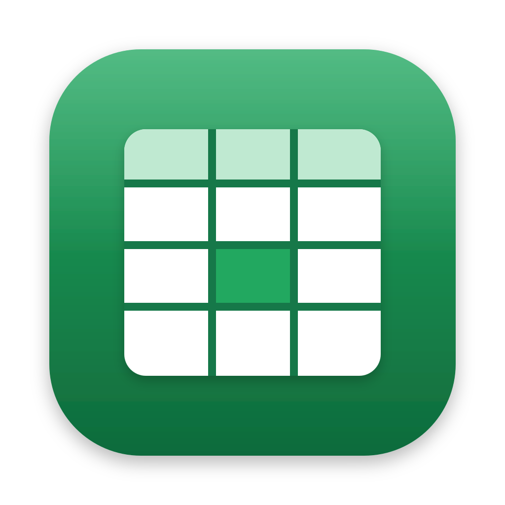
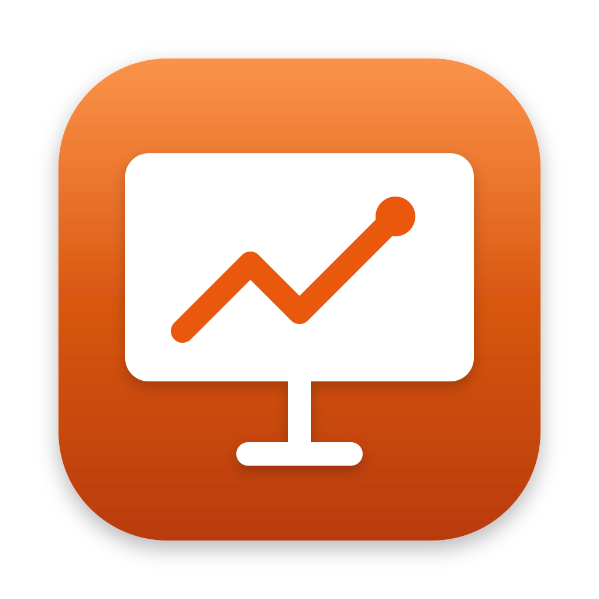

Kontor Docs
Word processor
Letters, reports, CVs and long documents with exact page layout.
- Opens .docx, .odt and .md, also saves .rtf and PDF
- Styles, tables, pictures, comments, track changes
- Table of contents, footnotes, citations, mail merge


KontorWrite documents, work with spreadsheets and build presentations. Kontor opens and saves the file formats you already use, and it never asks for an account.
Free and open source · Mac · Windows · Linux · BrowserLetters, reports, CVs and long documents with exact page layout.
Budgets, lists and calculations with hundreds of functions.
Slides for school, work and talks, with themes and animations.
Documents are saved on your computer. Nothing is uploaded, and there is no account and no tracking.
Open documents, workbooks and presentations from other office programs and send yours back in the same formats.
Ribbon, shortcuts and menus are where you expect them, so there is nothing new to learn.
Your work is kept while you type. If the app closes, it comes back where you left off.
Kontor is open source under the MIT license. Use it at home, at school and at work.
No installation possible? Every program also runs in a current browser.
Kontor is not signed with a paid Apple developer certificate yet, so macOS asks you to confirm the first start:
You only need to do this once.
Click More info and then Run anyway. The warning appears because the installer is not signed with a paid certificate yet.
Every release also has installers for managed deployment: a Windows .msi (installs for all users and works with common software deployment tools) and a macOS .pkg (installs into Applications and works with device management tools). Download them from the releases page.
Macs with an M1 chip or newer use Apple Silicon. Older Macs with an Intel processor use Intel. You can check under Apple menu › About This Mac.
Wherever you choose. Save writes back into the file you opened, like any desktop program. In the browser version, files are saved with your browser's save dialog or as a download.
No. Kontor is an independent open-source project. File format names such as .docx, .xlsx and .pptx only describe compatibility.